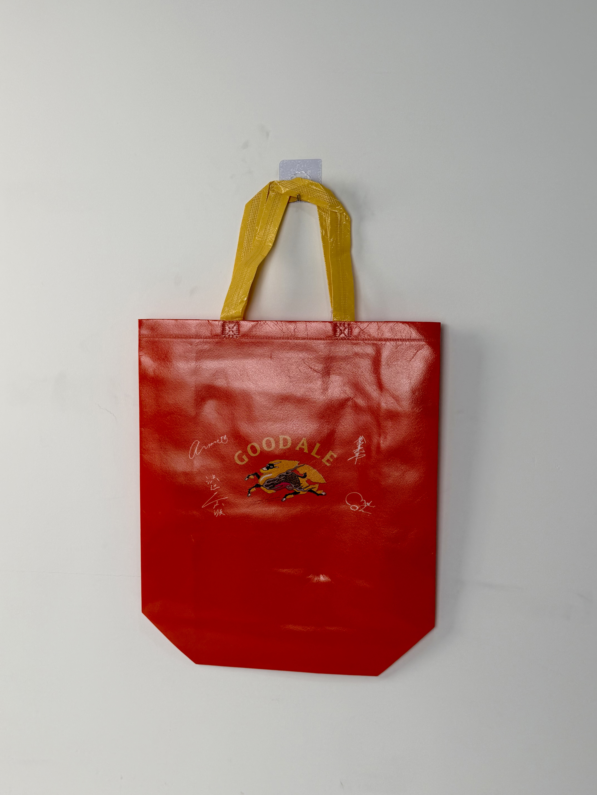

A festive red laminated tote for Kirin Beer's Good Ale promotion, featuring the legendary kirin mythical beast and celebratory gold typography that channels Japanese festival spirit.

Kirin is one of Japan's oldest and most prestigious brewing companies, with a history dating back to 1885. The brand takes its name from the mythical "kirin" — a chimerical creature from Chinese and Japanese folklore that symbolizes prosperity, good fortune, and benevolence. This legendary association has defined Kirin's brand identity for over a century, creating a visual language that connects modern beer consumption with centuries of cultural tradition. The "Good Ale" line represents Kirin's craft-beer-inspired offering, positioned between mass-market lagers and premium artisanal brews.
The kirin isn't just our logo — it's our spirit animal. When customers carry this bag, they're carrying a piece of Japanese legend.
The promotional tote was developed for Kirin's summer festival season campaign, distributed as a gift-with-purchase at supermarkets, convenience stores, and liquor shops across Japan. The bag needed to function as both practical shopping carrier and festival-season fashion accessory.
The design draws from Japanese festival aesthetics — the bold red field references traditional happi coats and shrine banners, while the gold kirin illustration evokes the luminous quality of festival lanterns. The "GOODALE" typography in arched gold lettering creates a celebratory, almost carnival atmosphere. Signature-style flourishes around the kirin add an artisanal, hand-crafted quality that differentiates the craft-beer line from Kirin's mainstream offerings.
Bold red references Japanese matsuri culture, shrine banners, and celebratory energy.
Mythical creature illustration channels centuries of cultural legend and brand heritage.
"GOODALE" in celebratory arch creates festival-banner visual association.
High-gloss finish catches light like festival lanterns, creating dynamic street presence.
The promotional tote was engineered for festival-season durability and visual impact. Japanese summer festivals involve crowds, outdoor conditions, and extended carrying periods — requiring construction that withstands heat, humidity, and heavy loads.
| Parameter | Specification | Test Standard |
|---|---|---|
| Load Capacity | 8 kg | ASTM D5265 |
| Foil Adhesion | > 300 cycles | ASTM D5264 |
| Water Resistance | Grade 5 (fully resistant) | AATCC 22 |
| Seam Strength | > 30 N/cm | ASTM D1683 |
The festival-quality production workflow integrated woven-fabric durability with gold-foil luxury effects. The six-stage process ensured that the kirin illustration and gold typography maintained brilliance through festival-season abuse.
120gsm woven PP via circular loom. Red base tape for maximum gold-foil contrast and festival color impact.
Four-color gravure for background and kirin detail foundation. Registration within ±0.5mm.
Metallic gold foil at 150°C for kirin illustration and "GOODALE" typography. Precision die for fine detail.
25-micron gloss BOPP for abrasion protection and festival-ready light reflection. Calendered for mirror finish.
Precision die-cutting with heat-sealed edges. Holographic surface protected during handling.
Gold-yellow woven handles attached with reinforced cross-stitch. Foil adhesion test. AQL 1.0 inspection.
The promotional tote was distributed across Kirin's summer festival campaign at Lawson, 7-Eleven, and major supermarket chains throughout Japan. The campaign targeted beer consumers attending summer matsuri, beach outings, and hanabi (fireworks) events.
Key Insight: The festival red color proved so popular that customers began using the bag as a dedicated festival accessory — carrying it to matsuri events, fireworks viewing, and beach barbecues even when not transporting Kirin products. The bag had become part of Japan's summer festival culture.
The gold kirin illustration created particular social-media impact during nighttime festivals. The metallic foil caught lantern and firework light, creating dynamic visual effects that customers photographed and shared — generating organic brand content that outperformed paid advertising.
Three design decisions differentiate this beer promotional bag from standard beverage packaging. Each leverages Japanese cultural symbolism and festival aesthetics to create emotional resonance.
The mythical kirin carries centuries of positive associations — prosperity, good fortune, and divine blessing. By featuring this legendary creature prominently, Kirin doesn't just sell beer; it sells cultural participation. Customers carrying the bag feel connected to a tradition that predates the company itself.
In Japan, red is the color of summer celebration — from shrine lanterns to fireworks to festival happi coats. By adopting this color, the bag immediately communicates its intended season and use case. Customers don't need to read text to understand that this bag belongs to summer.
Standard printed gold would disappear in nighttime festival environments. The metallic foil stamping creates genuine light reflection that makes the kirin and typography glow under lanterns and fireworks. This physical light-play transforms the bag from static packaging into a dynamic festival accessory.
We manufacture promotional bags for beverage brands seeking cultural resonance and seasonal impact. From metallic foil effects to woven durability, we create packaging that becomes part of the celebration.